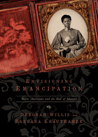

<HTML>
<head><script> (function(i,s,o,g,r,a,m){i['GoogleAnalyticsObject']=r;i[r]=i[r]||function(){  (i[r].q=i[r].q||[]).push(arguments)},i[r].l=1*new Date();a=s.createElement(o),  m=s.getElementsByTagName(o)[0];a.async=1;a.src=g;m.parentNode.insertBefore(a,m)   })(window,document,'script','//www.google-analytics.com/analytics.js','ga');   ga('create', 'UA-43183130-1', 'temple.edu');   ga('send', 'pageview'); </script>
<title>Deborah Willis and Barbara Krauthamer: Envisioning Emancipation - Print</TITLE>
<link rel="stylesheet" href="general.css" type="text/css"><SCRIPT LANGUAGE = JAVASCRIPT></SCRIPT></HEAD>
<BODY LINK="#3152A5" VLINK="#3152A5" ALINK=Gray BGCOLOR=White>
<CENTER><P CLASS=intro><br>What freedom looked like for black Americans in the Civil War era<br><br></P></CENTER><br>&nbsp;
<!--none//--><Table width="100%" border=0 cellspacing=5><tr><td width="175" align="center"></td><td>

<h1 class="booktitle">Envisioning Emancipation</h1>
<h1 CLASS=subtitle>Black Americans and the End of Slavery</h1>
<h3 class="author">Deborah Willis and Barbara Krauthamer</h3>
<p class="info">paper EAN: 978-1-4399-0986-7</br>$24.95, Feb 17, <font color=#990033>Available</font><br>
<P class="info">cloth EAN: 978-1-43990-985-0 (ISBN: 1-4399-0985-7) <br>$59.50, Nov 12, <FONT COLOR=#990033>Available</FONT>

<br> 240 pp,

 7x10,

 150&nbsp;halftones 

</P></td></tr></table><BR><p class="award"><P><font color="#996633">Winner of the NAACP Image Award for Outstanding Literary Work&#8212;Non-Fiction, 
2014</font></P>
<P><font color="#996633">One of the Top 25 Outstanding Academic Titles, <i>Choice</i>, 
2013</font></P>
</P>
<BLOCKQUOTE><P><I>"</I>Envisioning Emancipation<I> offers an illuminating and inspiring look at the men and women who enabled, lived through, and were affected by the landmark event of emancipation. With a stunning collection of photographs accompanied by engaging new scholarship, this book is sure to  have a vital and important impact on the way Americans see our nation and ourselves."</I>
<br>&#151<b>Thelma Golden</b>, Director and Chief Curator of the Studio Museum of Harlem<I></I></P></BLOCKQUOTE>
<P><P>The Emancipation Proclamation is one of the most important documents in American history. As we commemorate its 150th anniversary, what do we really know about those who experienced slavery? 

<P>In their pioneering book, <I>Envisioning Emancipation</I>, renowned photographic historian Deborah Willis and historian of slavery Barbara Krauthamer have amassed 150 photographs—some never before published—from the antebellum days of the 1850s through the New Deal era of the 1930s. The authors vividly display the seismic impact of emancipation on African Americans born before and after the Proclamation, providing a perspective on freedom and slavery and a way to understand the photos as documents of engagement, action, struggle, and aspiration.

<P><I>Envisioning Emancipation</I> illustrates what freedom looked like for black Americans in the Civil War era. From photos of the enslaved on plantations and African American soldiers and camp workers in the Union Army to Juneteenth celebrations, slave reunions, and portraits of black families and workers in the American South, the images in this book challenge perceptions of slavery. They show not only what the subjects emphasized about themselves but also the ways Americans of all colors and genders opposed slavery and marked its end.

<P>Filled with powerful images of lives too often ignored or erased from historical records, <I>Envisioning Emancipation</I> provides a new perspective on American culture.</p>
<BR><H2 class="inpageheading">Excerpt</h2><P>Excerpt available at <a href="http://www.temple.edu/tempress">www.temple.edu/tempress</a></p>

<BR><H2 class="inpageheading">Reviews</h2><p>
<p><I>"When Frederick Douglass observed that ‘Negroes can never have impartial portraits at the hands of white artists,’ he virtually predicted a century of derogation and invisibility for African Americans. Images of African Americans under slavery or even later during Reconstruction are notoriously rare, and there has never been a comprehensive survey of these always illuminating photographs. In </I>Envisioning Emancipation<I>, Deborah Willis and Barbara Krauthamer have painstakingly filled in many of the missing pieces, compiling an extraordinary photograph album of African American vernacular life that will be treasured as much for its historical insights as for its powerful aesthetic impact."</I>
<br>&#151<b>Brian Wallis</b>, Chief Curator, International Center of Photography

<p><I>"</i>Envisioning Emancipation<I> is a rare publication that is both intellectually innovative and emotionally enriching. Willis and Krauthamer have transformed the way scholars will look at abolitionism and the transition from enslavement to freedom by carefully recasting and reassessing black imagery to better understand and explore the intersection of race, gender, propaganda, and identity. The authors remind us that photography was a valuable and effective weapon in the struggle over the future of slavery in America, a weapon that was used, fought over, and manipulated by all involved."</I><br>&#151<b>Lonnie Bunch</b>, is the Founding Director of the National Museum of African American History and Culture

<p><i>"[A] stunning range of images that 'allow us to contemplate not only the history of slavery and emancipation but also our continued ties to that history and its legacies.' The result is a gem: haunting, touching, troubling, inspiring, and informative....Particularly noteworthy is the attention given to women, especially their role in the Civil War.... Though it does not purport to be a photographic history of African-Americans, one will certainly see the course of history leading to emancipation."</i> <br>&#151<b><i>Publishers Weekly</i></b>

<p><i>"[T]his is an important addition to the documentary study of African Americans from slavery into the 20th century and marks the 150th anniversary of the Emancipation Proclamation."</i> <br>&#151<b><i>Library Journal</i></b>

<p><i>"Groundbreaking…</i>Envisioning Emancipation<i> recounts a dynamic history of black self-possession and self-determination, one that challenges the abiding myth of the crusade against slavery and segregation: that of passive black victims who obtained freedom mostly through the benevolence and generosity of their white saviors."</i> <br>&#151<b><i>The New York Times</i> Lens blog</b>

<p><i>"This is a stunning book of recently discovered photographs of African Americans from the 19th century. This book challenges the predominant image of African Americans during this period as downtrodden and hopeless, and beautifully reveals rarely seen before photographs of African Americans before, during, and after the Civil War."</i> <br>&#151<b><i>Huffington Post</i> </b>

<p><i>"[A]rresting.... Willis and Krauthamer, with knowledge and a discerning eye, place the photos in a new and greatly informative context, all in their successful effort to demonstrate the emancipation process through photographs. Their very learned analysis bring to the reader many significant glimpses into the true nature of black people's evolving status during the late slavery period, during emancipation itself, and during the often confusing days of their first taste of freedom."</i> <br>&#151<b><i>Booklist</i> </b>

<p><i>"[R]ich and varied imagery...The prose is just as powerful.... The book tackles the difficult subject of the Zealy slave daguerreotypes commissioned by Louis Agassiz for the purposes of demonstrating racial inferiority.... There are many examples of empowerment in this book."</i> <br>&#151<b><i>The Daguerreian Society Quarterly</i> </b>

<p><i>"The authors have assembled and interpreted a treasure trove of historically situated photographs of African Americans from 1850 through the 1930s, organized around the themes of enslavement and emancipation.... Especially noteworthy are photographic representations of blacks after 1865, which disclose how free people wanted to be remembered. The essays exemplify the best practices for interpreting photographs as historical documents--first describing their formal content, then interpreting their meaning with insights from expertly chosen scholarly studies, and lastly speculating about the people in the images. This erudite book deserves a wide audience, not least of all for its beautifully crafted prose, high-quality reproductions, and relatively affordable price. Bravo! Summing Up: Essential."</i> <br>&#151<b><i>CHOICE</i></b>

<p><i>"The authors’ scholarship sheds new light on the history of photography and black photographers who emerged during and after the Civil War. These men shared the need and longing to be seen with the humanity and dignity all people deserve, and the resulting photographs make for large emotions of respect in the viewer.... Another reason this book matters is that it provides more evidence of the extent to which black men, women, and children, risked their lives to oppose slavery."</i> <br>&#151<b><i>La Vida News/The Black Voice </i></b>

<p><i>"A wonderful addition to this expanding field.... Willis and Krauthamer’s volume is a much-needed source for the study of nineteenth- and early twentieth-century black visual culture, gathering together both well-known and arcane photographs of black individuals for further study.... Willis and Krauthamer’s volume will help immensely in the classroom as well as for researchers trying to think through the contours of black visual culture in the century after photography’s invention in 1839."</i><br>&#151<b><i>American Quarterly</i></b>

<p><i>"There are some wonderful, unfamiliar images here. In addition to the oft-used collections of the Library of Congress in Washington, DC, the authors draw from the Charles L. Blockson Afro-American Collection at Temple University, Philadelphia, Pennsylvania, the Randolph Linsly Simpson African-American Collection at the Beinecke Library at Yale University, New Haven, Connecticut, and from historical societies in South Carolina, New Hampshire, Kansas, and Missouri. The images should send researchers scurrying back to the archives.... There are some wonderful and relatively unknown images of Emancipation Day festivities, for example, and some pictures of gatherings of former slaves, whose meanings the authors nicely complicate."</i> <br>&#151<b><i>Visual Resources</i></b>

<p><i>"A number of recent books have addressed black American lives in the first hundred years of photography but none have offered as many diverse and obscure images as this one. Willis and Krauthamer's text proves that twenty-first-century viewers are still learning from the past and are still on the quest to answer the author's guiding question about freedom.... This book is a must-have for lay readers and scholars across disciplines."</I><br>&#151<b><i>The Journal of American History</b></i>

<p><i>"[The] photographs—which are grounded by historical context—explore a long trajectory, vividly illustrating black life from the antebellum period to the end of the 1930s."</i><br>&#151<b><i>American Studies Journal</i></b>

<p><i>"This fascinating collection demonstrates not only a broad range of photographic technologies, but also the numerous ways African Americans actively participated in the photographic practice.... [they] reveal how complicated the process of emancipation and freedom could be.... [T]hrough Willis and Krauthamer's efforts [historians] may also come to know what emancipation looked like and how those freed participated in and responded to the event. The authors expertly use historical photographs to deepen our understanding of the black experience of slavery and emancipation."</i><br>&#151<b><i>Journal of Southern History</i></b>

<p><i>"[A] fascinating interdisciplinary study of the multiple meanings and uses of photography in the nineteenth-century African American freedom struggle.... [T]he images in this beautiful volume present an intimate portrait of the lives and labors of millions of black Americans who survived slavery....  Across the volume, the authors successfully bring together methods of analysis from both history and the visual arts to show how new styles of visual interpretation can enhance well-worn paths of historical research.... Willis and Krauthamer provide a valuable primer in visual literacy that models how photographs themselves can be read for fresh insights into the lives of people who are often mute in the documentary record.... The authors’ skill at unlocking new worlds of meaning even from the most familiar photographs makes the book exceptionally instructive for both seasoned historians and students.... [A] stunning and revelatory book."</i><br> <b>&#151<i>Labor: Studies in Working Class History of the Americas</i></b>
</p><p><p><i><a href="http://www.nytimes.com/2012/12/22/books/envisioning-emancipation-book-documents-slaverys-end.html?smid=fb-share&_r=2&" target="new">The New York Times</i></a> December 21, 2012 ran an interview with the authors and on December 20, 2012 the book was the subject of <i><a href="http://lens.blogs.nytimes.com/2012/12/20/images-of-emancipation/" target="new">The New York Times</i> Lens blog</a>. </p>

<p>Author Barbara Krauthamer was interviewed and the book was mentioned on the <I><a href="http://www.cbsnews.com/8301-18563_162-57561529/examining-the-faces-of-emancipation/" target="new">CBS Evening News</a></I>, January 1, 2013.</p>

<p>Author Deborah Willis was interviewed on <I><a href="http://inamerica.blogs.cnn.com/2013/01/01/150-years-later-myths-persist-about-the-emancipation-proclamation/" target="new">CNN.com</a></I> on January 1, 2013. A <a href="http://www.cnn.com/2012/12/31/us/gallery/emancipation/index.html" target="new">photo gallery</a> accompanied the story.</p>

<p><a href="http://www.theroot.com/multimedia/images-emancipation-150-years-later" target="new">TheRoot.com</a> ran a story featuring images and the authors on their website on January 1, 2013 (picked up by MSN).</p>

<p>The <a href="http://www.bbc.co.uk/worldserviceradio/on-air" target="new">BBC</a> aired an interview with Deborah Willis on January 2, 2013.</p>

<p>Listen to a <a href="https://wurdradio.box.com/s/kdua30cjmblvmfb78gzp">audio clip</a> of Deborah Willis and Barbara Krauthamer's interview with Stephanie Renee on WURD (900 AM, Philadelphia), from February 9, 2013.</p>

<p>Deborah Willis and Barbara Krauthamer talked about their book at the National Archives in Washington DC on January 11, 2013. C-Span recorded the event for their video library, which can be viewed <a href="http://www.c-spanvideo.org/program/310323-1" target="new">here</a>.</p>

<p>Listen to a <a href="http://www.temple.edu/tempress/pdf/BBNYInterview.mp3">audio clip</a> of Deborah Willis and Barbara Krauthamer's interview on <i>Black Beat New York: The Flo Wiley Show</i>, from June 13, 2013.</p></p>
<BR><H2 class="inpageheading">Contents</h2><p>
<p>Preface and Acknowledgments
<br>The Emancipation Proclamation
<br>Introduction
<br>1. Representing the Appeal 
<br>2. A Collective Portrait of the Civil War
<br>3. Legacies of Emancipation
<br>Notes
<br>Index
</P><BR>&nbsp;<BR><H2 class="inpageheading">About the Author(s)</H2><p>
<P><b>Deborah Willis</b>, a leading historian and curator of African American photography and culture, is Chair and Professor of Photography and Imaging at Tisch School of the Arts at New York University. She was a MacArthur Fellow, a Guggenheim Fellow, and a Fletcher Fellow. Her co-authored book <i>Michelle Obama: The First Lady in Photographs</i> received the 2010 NAACP Image Award for Outstanding Literary Work—Biography/Autobiography. Her most recent books are <i>Posing Beauty: African American Images from the 1890s to the Present</i> and <i><a href="1440_reg.html" target="_top">Black Venus 2010: They Called Her "Hottentot."</a></i> (Temple).</P>
<P><b>Barbara Krauthamer</b> is Associate Professor of History at the University of Massachusetts-Amherst. She is the author of <i>Black Slaves, Indian Masters: Slavery, Emancipation, and Citizenship in the Native American South</i> as well as many articles and essays on the history of slavery and emancipation. She has received fellowships and awards from the Association of Black Women Historians, the National Endowment for the Humanities, Stanford University, the University of Texas at Austin, Yale University, and the Schomburg Center for Research in Black Culture.</P>
</p>
<BR><H2 class="inpageheading">Subject Categories</H2>
<p><A HREF="/tempress/african.html" TARGET="_top">African American Studies</a>
<BR><A HREF="/tempress/art.html" TARGET="_top">Art and Photography</a>
<BR><A HREF="/tempress/history.html" TARGET="_top">History</a>
</p>
<P>&nbsp;</P><font face="Arial" size="1"><a href="copyright.html" OnMouseOver="window.status='Web Copyright Policy';return true;" OnMouseOut="window.status=''" TITLE="Web Copyright Policy">&copy;</a> 2016 <a href="http://www.temple.edu" target="new" OnMouseOver="window.status='Link to Temple University home page';return true;" OnMouseOut="window.status=''" TITLE="Link to Temple University home page">Temple University</a>. All Rights Reserved. This page: <a href="http://www.temple.edu/tempress/titles/2253_reg.html"OnMouseOver="window.status='Link to the book page';return true;" OnMouseOut="window.status=''" TITLE="Link to the book page">http://www.temple.edu/tempress/titles/2253_reg.html.</a></font></BODY></HTML>
                    